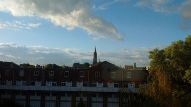
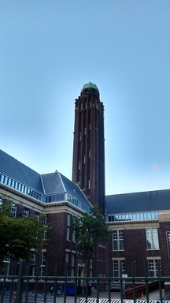
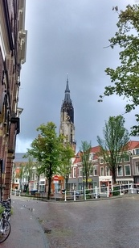
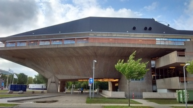
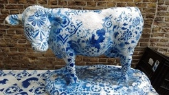

کلیسای جدید، صبح زود، از پنجره اتاق آیدا. خانه خوب و ارزان و راحتی داشتیم در مرکز دلفت که احتمالن آخر امسال ترکش میکنیم.

اینجا دانشکده معماری است. این برج را نمیدانم به چه کار میآید. دانشکده اصلی معماری همان اوایلی که آمده بودیم دلفت آتش گرفت و نابود شد. الان معمارهای آینده اینجا هستند. پارسال که رفته بودم دفاع یکی از این دانشجوهای توسعه پایدار به عنوان عضو کمیته، داخلش را هم دیدم که خیلی گوگوری مگوری و شیک است. یادم است مجبور شدم بر خلاف میل قلبی کمی به کار دانشجوی بیچاره برینم. مقصر استادش بود. نمرهای میخواست که حق دانشجویش نبود. آنقدر زیادهخواهی کرد که آدم بیتفاوت و آرام و بهتخممی مثل من را هم وادار به واکنش کرد. همینجا برایتان بگویم که ریدن به شدت مسری است. کافی است یکی شروع کند. همه حضار با قوت بیشتری ادامه میدهند. سعی کنید در یک جمع اگر یکی کار را شروع کرد سریع جمعش کنید. تنها راهش هم ریدن به کسی است که دارد به شما و کارتان گند میزند. استاد این دانشجو هم بلد بود. اما هنوز شروع نکرده بود که جواب دادم و سرتاپایش قهوهای شد. دیگر عضو کمیته هم با اسهال شدیدی ادامه داد و جنگ مغلوبه شد. بعد از دفاع استادش نه تشکر کرد و نه خداحافظی.

چند وقت قبل از آسمان خوشرنگ دلفت گفته بودم. از آسمان زشت و تاریک و پرباد و بارانش هم باید گفت که همین اول صبح به آدم حال و هوای مرگ میدهد. روزهایی به شدت یک رنگ: خاکستری تیره.

گاهی هم دل آسمان برایمان میسوزد و گوشههای آبیاش را نشانمان میدهد. این ساختمانی که عکسش را میبینید و شبیه سفینه فضایی است محل دفاع دکتری است. روز دفاعم یکی از ممتحنها در حین حرکت به سمت سالن در جملهای که نیمی گلایه بود و نیمی کنایه، به این ساختمان گفت پیاچدی فکتوری (کارخانه دکترساز).

گاو چینی به رنگ آبی دلفت، یعنی گاوی که از جنس سفال چینی است و نه گاوی که در چین به دنیا آمده. این گاو البته به احتمال زیاد از جنس گچ است. توی کوچهای باریک کنار یکی از سوغاتی فروشیهای اصلی دلفت بود. این چینیها در زمانهای دور خیلی پر مشتری بوده و هلندیهای کاسب راه تولیدش را از چینیها یاد میگیرند و در کارگاههایشان در هلند چینی اصل چین تولید میکنند. به مصداق «روزگار آیینه را محتاج خاکستر کند» یا «گذر پوست به دباغخانه میافتد» یا «کوه به کوه نمیرسد الی آخر» الان بعد از خرید برایتان توضیح میدهند که مراقب کپیهای چینی (یعنی تولید چین) باشید و خیلی ار اینها اصل دلفت نیست و اینها.
گویا در روزگار کنونی کالاهای سوسول و تجملاتی در اروپا تولید میشوند و بقیه ملزومات زندگی در چین.